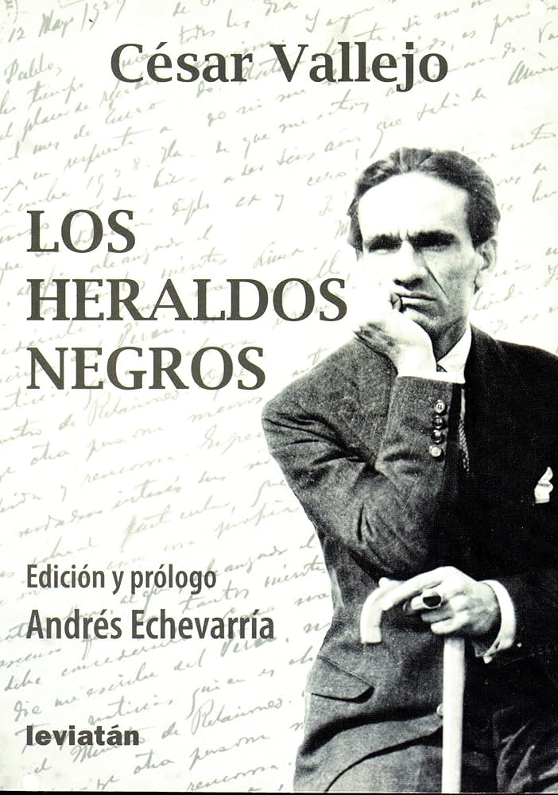

There are blows in life, so powerful... I don't know!
Blows like the hatred of God; as if before them,
the undertow of everything suffered
welled up in the soul... I don't know!
They are few; but they are... They open dark trenches
in the fiercest face and in the strongest back.
They will perhaps be the steeds of barbaric Attilas;
or the black heralds that Death sends us.